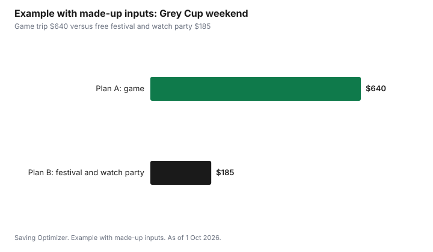

Sports · Canada
Grey Cup 2026 in Calgary: Tickets, Free Festival Events and Hosting a Party
The 113th Grey Cup is on Sunday 15 November 2026 at McMahon Stadium in Calgary, with kickoff at 5 p.m. Mountain time (7 p.m. Eastern). The cheapest way to be part of it is the free side of the Grey Cup Festival, which runs from 11 to 14 November at Stampede Park: the Street Festival and the Family Zone cost nothing to enter, and there is a free tailgate outside McMahon on game day. Game tickets, team parties, concerts and the rodeo cost money. As of 1 Oct 2026, the Corral section and the suites were sold out, while other game seats and premium packages were still listed. For most fans across Canada, a well-planned watch party is the low-cost option.
Key takeaways
- Grey Cup: Sunday 15 November 2026, 5 p.m. MT kickoff, McMahon Stadium, Calgary.
- Free: the Street Festival at Stampede Park, 12 to 14 November, 11 a.m. to 9 p.m.; the BMO Centre Family Zone; the game-day tailgate in McMahon's east lot, 1 to 5 p.m.; the trophy's arrival at Eau Claire Plaza on 8 November.
- Paid: game tickets, Big Four Roadhouse concerts, team parties, the Grey Cup Rodeo on 14 November and the 18+ VIP tailgate.
- As of 1 Oct 2026, the Corral and suites were sold out; buy game tickets only through the official seller or its named resale partner.
- Example with made-up inputs: a fan who skips the game ticket and does the free festival spends $185 on a day trip instead of $640.
The dates
| Date | Event | Cost |
|---|---|---|
| Sunday 8 November | Grey Cup arrival at Eau Claire Plaza | Free |
| Wednesday 11 November | Festival kickoff party at the Big Four Roadhouse, with a Remembrance Day acknowledgment | Ticketed |
| Thursday 12 to Saturday 14 November | Street Festival at Stampede Park, 11 a.m. to 9 p.m. | Free |
| 12 to 14 November | BMO Centre Family Zone | Free |
| From 12 November | CFL team parties at the BMO Centre | Ticketed |
| Friday 13 November | CFL Alumni Association Legends Luncheon | Ticketed |
| Saturday 14 November | Grey Cup Rodeo (two performances); Girls in Sport Summit | Ticketed or registration |
| Sunday 15 November | Game-day tailgate, McMahon east lot, 1 to 5 p.m. | Free; 18+ VIP tailgate is paid |
| Sunday 15 November | 113th Grey Cup, 5 p.m. MT kickoff | Ticketed |
The free festival: what you get without a ticket
The Street Festival stretches across the Stampede grounds from the Big Four Roadhouse to the BMO Centre. According to the Calgary Herald's preview of the festival, it includes live local entertainment, pancake breakfasts, a family-friendly licensed beer garden, outdoor activities, an interactive art installation about CFL locker rooms and stadiums, and a daily northern lights experience and drone show. Organisers said they expected about 350,000 people to take part, including about 30,000 visitors from across Canada.
The Family Zone inside the BMO Centre is free and includes live entertainment, a toddler play area, football activities and autograph sessions with CFL players and alumni, plus Hall of Fame displays. Organisers have also planned a sensory-friendly trailer and sensory kits. For families, a day at the Street Festival and the Family Zone may be the whole Grey Cup experience, with the game watched afterwards at home or at a friend's.
On game day, the free tailgate in the east parking lot of McMahon Stadium runs from 1 p.m. to 5 p.m. with food and entertainment. Food and drinks cost money even at free events, so set a spending cap for the day.
Game tickets: how to buy safely
Grey Cup tickets are sold through the official festival and Calgary Stampeders ticketing channels. As of 1 Oct 2026, the festival's ticket page said the Corral, a popular section, was sold out and that suites had sold out, while corporate packages and premium experiences were still available. Accessible seating is sold through Stampeders customer service.
When a section sells out, resale prices can rise. Buy only through the official seller or the resale partner it names, pay by credit card, and never send money by e-transfer to a stranger for tickets. Before paying for a resale ticket, confirm that it can be transferred to you in the official ticketing account, and keep every message and receipt.
A Calgary trip budget
For fans travelling to Calgary, the game ticket is often not the biggest cost. Flights, hotels and meals in a week when tens of thousands of visitors arrive can cost more. A short trip built around the free festival days, with the game watched at a bar or a team party, can cost far less than a full weekend with a game ticket.
| Line | Questions to ask | Your number |
|---|---|---|
| Travel | Flight or drive? Booked early? | |
| Accommodation | Hotel, rental, or friends? How many nights? | |
| Game ticket | Is the game the goal, or the festival? | |
| Festival extras | Concerts, team parties, rodeo, VIP tailgate | |
| Food and drink | Daily cap | |
| Local transit and parking | Transit to Stampede Park and McMahon | |
| Merchandise | One item, or none |
Calgary Transit serves both Stampede Park and McMahon Stadium, which usually beats event parking. Staying with friends, sharing a rental with other fans, or staying farther from downtown can cut accommodation costs. If you are driving from elsewhere in Alberta or from Saskatchewan, a day trip for the free festival is possible.
Watching at home: the low-cost option
Most fans watch the Grey Cup on television or by streaming. In Canada the CFL's broadcaster is TSN, with RDS in French. If you do not have TSN through a TV package, TSN sells streaming plans directly; as of 1 Oct 2026, tsn.ca lists TSN Standard at $24.99 a month and TSN Premium at $29.99 a month. A monthly plan can be started for the game and cancelled afterwards; read the cancellation terms first.
Hosting a Grey Cup party
A watch party works like any potluck. Decide the guest count, provide one main dish such as chili or a slow-cooker dish, and ask guests to bring snacks and drinks from a sign-up list. With kickoff at 7 p.m. Eastern, 6 p.m. Central and 5 p.m. Mountain, the game runs over dinner in most of the country, so plan a real meal rather than snacks alone. The party hosting guide has a sign-up sheet that works for game day too.
Example with made-up inputs: two ways to do Grey Cup weekend
These numbers are an example with made-up inputs. They are not ticket or travel prices. An Edmonton fan considers two plans. Plan A: drive down Saturday, stay one night, buy a game ticket from resale and go to a team party. A made-up $380 ticket, $160 for a hotel night, $40 for the team party and $60 for food comes to $640.
Plan B: drive down Saturday morning for the free Street Festival and Family Zone, drive home, and host a watch party on Sunday. Gas at a made-up $70, $45 for food and drinks at the festival, and a $70 share of the watch party come to $185.
| Line | Plan A: game | Plan B: free festival and watch party |
|---|---|---|
| Game ticket | $380 | $0 |
| Accommodation | $160 | $0 |
| Team party or watch party | $40 | $70 |
| Food and gas | $60 | $115 |
| Total | $640 | $185 |

Common mistakes
- Buying tickets from a stranger by e-transfer.
- Booking a hotel late in a week when about 30,000 visitors are expected.
- Paying for event parking when transit serves both venues.
- Forgetting that food and drinks at free events still cost money.
- Subscribing to a streaming plan for one game and forgetting to cancel it.
Sources
- 2026 Grey Cup Festival, 113th Grey Cup tickets page and FAQs, greycupfestival.ca, as of 1 Oct 2026. Sunday 15 Nov, 5 p.m. MDT kickoff at McMahon Stadium; Corral sold out; suites sold out; corporate packages and premium experiences available; accessible seating through Stampeders customer service.
- Calgary Herald, Grey Cup 2026: What's happening in Calgary before the big game, 9 Sep 2026. Festival 11 to 14 Nov; free Street Festival 12 to 14 Nov 11 a.m. to 9 p.m.; free Family Zone; ticketed concerts, rodeo, team parties and luncheon; free tailgate 1 to 5 p.m.; 18+ VIP tailgate; trophy arrival 8 Nov; about 350,000 participants and 30,000 visitors expected.
- Calgary Stampeders, Tickets now on sale for 2026 Grey Cup Festival, as of 1 Oct 2026.
- TSN, Subscribe (tsn.ca/subscribe), as of 1 Oct 2026. TSN Standard $24.99 a month and TSN Premium $29.99 a month.
- The Edmonton fan, both plans and every amount in the example table and chart are an example with made-up inputs.
Frequently asked questions
When and where is the 2026 Grey Cup?
The 113th Grey Cup is on Sunday 15 November 2026 at McMahon Stadium in Calgary, with kickoff at 5 p.m. Mountain time, which is 7 p.m. Eastern.
What Grey Cup Festival events are free in 2026?
The Street Festival at Stampede Park from 12 to 14 November, 11 a.m. to 9 p.m., the BMO Centre Family Zone, the game-day tailgate in McMahon Stadium's east lot from 1 to 5 p.m. on 15 November, and the trophy's arrival at Eau Claire Plaza on 8 November are free.
Are Grey Cup 2026 tickets still available?
As of 1 Oct 2026, the festival's ticket page said the Corral and the suites had sold out, while corporate packages and premium experiences were still available. Buy only through the official seller or its named resale partner.
How can I watch the Grey Cup in Canada?
The CFL's broadcaster is TSN, with RDS in French. Without a TV package, TSN sells streaming plans; as of 1 Oct 2026, tsn.ca lists TSN Standard at $24.99 a month and TSN Premium at $29.99 a month.
Researched and drafted with AI assistance and fact-checked against official Canadian sources. How we create content.
Disclosure: Saving Optimizer may earn a commission if a partner link is added later, such as a streaming or ticketing offer type. No partnership with the CFL, the Grey Cup Festival or any broadcaster is claimed on this page, and no service is ranked. Education only.